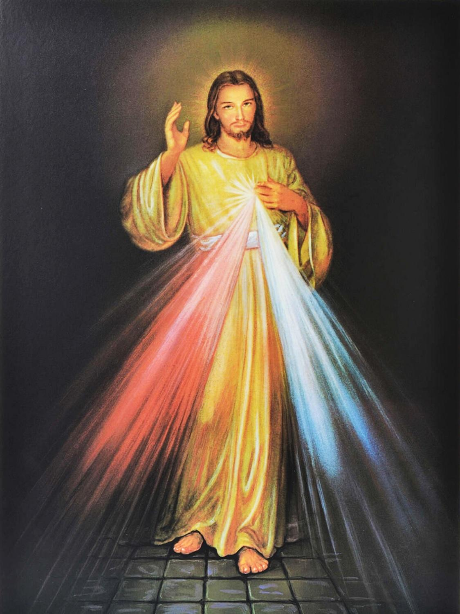
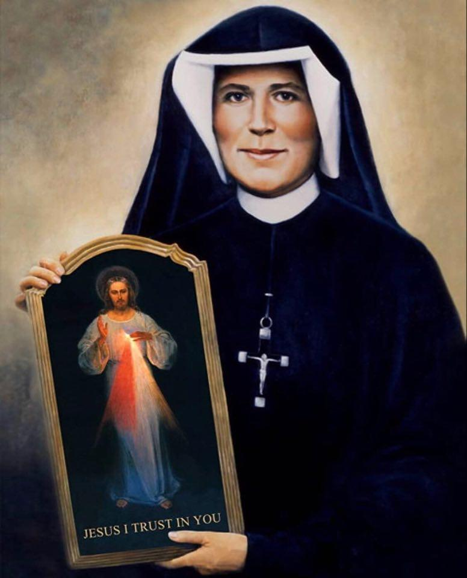
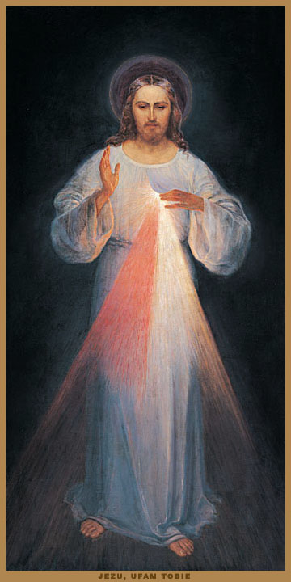

Divine Mercy

Veneration of the Divine Mercy
According to the revelations of Jesus from the Diary of Saint Maria Faustyna
My daughter, proclaim to the whole world My unfathomable mercy. [699]
Tell suffering humanity to draw close to My merciful Heart and I will fill it with peace. [1074]
“Nothing
is so necessary to man as the mercy of God.”
St. Pope John Paul II
On the Traces of the Divine Mercy
“Through the tender mercy of our God, when the day shall dawn upon us from on high.” (Lk 1,78)
Interiority and spirituality: fostering and developing the religious disposition of the human person (...) all these first-rate tasks and blessed fruits of lived faith we find in the Diary of Sister Maria Faustyna:
“O, how beautiful is the spiritual world! It is so real that in comparison the external life is nothing but empty illusion and powerlessness!” [884]
Sister Faustyna shows us what has all too often retreated into the background, if not into oblivion, in the course of development over recent decades – the interior life of the soul with God.
“If only souls would listen to My voice when I speak in the depth of their hearts, they would reach the summit of holiness in a short time.” [584]
True interiority consists in joyful love for God and His holy will:
“Sadness cannot take root in a heart that loves God!” [886]
Under the name of total freedom, limitless emancipation, the commandments of God were called repressive – yes, God Himself was declared the opponent of human freedom. Pope John Paul II noted in his encyclical Dominum et Vivificantem (No. 38) that God was ultimately declared the enemy of His own creature. Sister Faustyna unmasks this blasphemy by proclaiming luminously:
“Love for God sets the soul free! It is like a queen who knows not the compulsion of slavery!” [890]
The concern of many believers that interiority, the spiritual life, is a very difficult thing, that the ascent of the soul can only be achieved with extraordinary deeds, had already been rejected as groundless by St. Thérèse of the Child Jesus with her “Little Way.” Entirely in this tradition, the Diary of Sister Faustyna aims at what is decisive in religious life: love.
“Jesus, You have shown me wherein the greatness of the soul consists: not in great deeds, but in great love alone. Love gives value. It gives all deeds their value. So do small and everyday deeds become great and significant before God through love. Love is a mystery that transforms everything it touches into beautiful and God-pleasing things.” [889]
God is love. (1 Jn 4,16) And love wants to give itself. Giving oneself is joy; not being able to give oneself is suffering. Jesus gives Himself entirely to God; He gives His life for the sin of the world. Toward the sinful human being, love reveals itself as mercy (miseri cor dare = misericordia).
Divine Mercy is greater than human wretchedness. The more wretched the sinful man, the more the goodness of God is inclined to show him mercy. This total readiness to grant mercy to everyone is revealed to Faustyna in a special way. Her special vocation is to proclaim God’s mercy. This is also the meaning of the image she was to paint: An image that, even when merely contemplated, awakens boundless trust in Divine Mercy. (…)
“I cannot punish even the greatest sinner. If he appeals to My mercy, I justify him in My unfathomable and inscrutable mercy.” [1146]
According to Jesus’ revelation to Faustyna, it only takes insight into one’s own wretchedness and openness to the call of the Lord, then streams of mercy will pour forth from the Heart of Jesus over mankind. Sister Faustyna thus becomes the herald of trust in infinite mercy. Whatever may have happened in a person’s life, even the worst sins – full, undiminished trust in the merciful love of Jesus is always the way to salvation.
The full religious name of our Servant of God is: Sister Maria Faustyna of the Most Blessed Sacrament. This name opens the view to a further richness of this godly life, namely the significance of Holy Communion in Faustyna’s life. She left a number of preparations for receiving Holy Communion. They are treasures full of incredible love and depth. Here too divine providence can be recognized: In the time of Mass Communions, of massive Communion reception, it is necessary to make the many communicants aware again and again of whom they receive, what belongs to good preparation, worthy and interior reception, and careful thanksgiving.
“The most solemn moment of my life is always the moment when I receive Holy Communion … The angels would envy us humans only two things, if they could: receiving Holy Communion and suffering.” [1804]
With the last-cited word, a further dimension in Faustyna’s life is characterized. Suffering had become her familiar companion. With the Holy Host of the Eucharist, she wanted to become a host, a sacrifice, herself. On the one hand, her desire was to suffer with Jesus for the salvation of sinners.
“The Lord granted me during the Holy Hour to share in His Passion. I participated in the bitterness that filled His soul during the Passion.” [872]
On the other hand, she wanted to make reparation to Jesus for the hardships He has to suffer from men, which is why Jesus often said words like these to her at Holy Communion:
“My daughter, your love is reparation to Me for the coldness of heart of many souls.” [1816]
Here the cooperation in the salvation of souls, always known in the history of piety, becomes reality. (...) Pope Pius XII spoke of this earnestly in his encyclical Mystici Corporis:
“It is a truly awe-inspiring mystery that one can never contemplate enough: that the salvation of many depends on the prayers and voluntary penances of the members of the mystical Body of Jesus Christ, which they take upon themselves for this purpose.” (Heilslehre der Kirche, p. 489, Frbg. Schweiz 1953)
After reading the Diary of Sister Faustyna, this precious jewel of spiritual literature, the question arises: How can one live even a single moment without loving God?
From the preface to the Diary of St. Maria Faustyna by Bishop Josef Stimpfle †, Augsburg August 6, 1987

Sister Faustyna and Her Mission
“In every soul I accomplish the work of mercy. The greater the sinner, the greater his right to My mercy. Over every work of My hands My mercy is fixed.” [723]
The mission of Sister Faustyna encompasses the devotion to the Divine Mercy in new forms. The foundation of this devotion is childlike trust in God and merciful love for one’s neighbor, as it were the key to Christian perfection.
Sister Faustyna recognized this unfathomable mercy above all through contemplation of the works of God. In the mercy of God she sees the only reason that He calls creatures from nothing into being. She writes about this:
“O God, out of mercy You have called the human race from nothing into being and have abundantly gifted it with natural and supernatural gifts. That was still not enough for Your goodness. In Your mercy You give us eternal life. You let us come to Your eternal happiness, participate in Your interior life, and that solely on account of Your mercy. You gift us with Your grace solely because You are good and filled with love. You did not need us to be happy, but You, Lord, want to share Your own happiness with us.” [1743]
She recognizes even more in the Incarnation of God His superabundant mercy, which reveals itself most perfectly in the event of redemption on the Cross.
“Through Your mercy – she acknowledged in conversation with Jesus – You descended to us to raise us from our distress. (…) The unfathomable miracle of Your mercy occurs, Lord: the Word becomes flesh, God dwells among us, the Word of God – incarnate mercy. This humiliation of God through the acceptance of human nature is an expression of His mercy, an expenditure of His love at which heaven marvels.” [1745]
The recognition of the mystery of the mercy of God in the work of creation, redemption, and beatitude took place in her life through the use of very simple means, such as spiritual reading, daily meditation, contemplation of the Rosary mysteries and the Stations of the Cross, deep experience of the holy sacraments, the liturgical feasts of the Church year, as well as considering and noticing all the good that God had wrought in the world and in her personal life.
The Key to the Heart of God
The foundation of devotion to the mercy of God is trust. It is as it were the key to the Heart of God and the vessel for drawing all graces.
“From My mercy one draws graces with only one vessel, and that is trust. The more a soul trusts, the more it receives.” [1578]
This trust proves itself in that we daily anew direct our life according to the will of God. This happens first through the fulfillment of His commandments and our duties of state, second through following the inspirations of the Holy Spirit, and third through the grateful acceptance of all His dispositions and permissions. [Cf. 444]
“Say, My daughter, that I am entirely love and mercy. When a soul approaches Me with trust, I fill it with such mighty grace that it cannot contain this grace within itself and will radiate it onto other souls.” [1074]
Mercy toward one’s neighbor is – alongside trust – the second essential component of this devotion. Therefore Jesus expressed the wish that His devotees, out of love for Him, perform at least one act of mercy toward their neighbors in the course of the day.
“You shall show mercy to your neighbor always and everywhere. You cannot excuse yourself, nor talk yourself out of it, nor justify yourself. I give you three ways to show mercy to your neighbor: first – the deed; second – the word; third – prayer. In these three degrees the fullness of mercy is contained; it is an irrefutable proof of love for Me. Thus the soul praises and venerates My mercy.” [742]
He also explained that mercy toward the soul is more meritorious and added that no material means are necessary for this. Mercy can and should everyone show, above all every baptized person, according to the message of the Gospel.
Thus the devotion to the mercy of God does not have exclusively the character of a prayer, but is a deeply lived manifestation of Christian life.

This image of grace has been located in the Sanctuary of Divine Mercy in Vilnius (Lithuania) since September 2005. Eugeniusz Kazimirowski was the first painter commissioned to paint the image of the Merciful Jesus according to Sr. Faustyna’s descriptions. When she saw it for the first time in 1934, she wept bitterly because it did not succeed in depicting Jesus as beautifully as she had been permitted to behold Him. Yet Jesus comforted her, speaking to her: “Not in the beauty of the colors or the brushstroke lies the greatness of this image, but in My grace.” [313]
The Image of the Merciful Jesus
“O eternal Love, You command that Your holy image be painted and reveal to us the unfathomable source of mercy. You bless those who approach Your rays, and every black soul is transformed into snow.” [1]
The encounter of Sister Faustyna with the Merciful Jesus on February 22, 1931 stands at the beginning of the veneration of that unique image through which many people receive streams of graces. She writes:
“In the evening, when I was in my cell, I beheld Jesus, the Lord, in a white robe. One hand was raised in blessing, the other touched the robe at the breast. From the opening of the robe (…) two great rays went forth, a red one and a pale one. (…) My soul was permeated with fear, but also with great joy. After a while Jesus said to me: ‘Paint an image according to what you see, with the inscription: Jezu Ufam Tobie (Jesus, I trust in You)! I desire that this image be venerated, first in your chapel, then throughout the whole world.’” [47]
The content of the image is closely connected with the liturgy of the second Sunday of Easter (Feast of Divine Mercy). The Gospel of the day of the Church concerns the appearance of the Risen One in the Upper Room and the institution of the Sacrament of Penance (cf. Jn 20,19-23). The rays of Blood and Water flowing from the pierced heart as well as the wounds on hands and feet recall the events of Good Friday (cf. Jn 19,16-37).
“The rays of mercy consume Me, I want to pour them out over the souls of men.” [50]
Characteristic of the image of the Merciful Jesus are the two rays that the Lord Himself explained:
“The pale ray signifies water, which justifies souls; the red ray signifies Blood, which is the life of souls. (...) These two rays went forth from the depths of My mercy when My dying Heart on the Cross was opened with the lance. Happy are those who live in their shadow.” [299]
The Sacraments of Baptism and Penance purify the soul, and in the Sacrament of the Eucharist it ever anew receives its nourishment.
Thus the image speaks on the one hand of the great mercy of God, which was revealed to us in the paschal mystery of Christ, and on the other hand it reminds us of the Christian practice of trust as well as active love for one’s neighbor. The words placed on the image point to the attitude of trust: Jesus, I trust in You!
“The image,” said Jesus, “shall remind of the demands of My mercy, for even the strongest faith avails nothing without deeds.” [742]
To devotion to the image understood in this way, the Lord has promised eternal salvation:
“I promise that the soul that venerates this image will not perish.” [48]
The Lord also promised great progress on the path to Christian perfection, the grace of a happy death, as well as all other graces and temporal benefits for which people will ask Him with trust:
“Through the image I will grant many graces to souls; therefore every soul should have access to it.” [570]
In 1943, the painter Adolf Hyla, in thanksgiving for his rescue from the war, also made a painting of the Merciful Jesus and donated it as a votive offering for the chapel of the Sisters of the Congregation of Our Lady of Mercy in Kraków. To this day countless people come to this sanctuary to venerate the Merciful Jesus and to ask for graces. Copies of this great image of grace are distributed throughout the whole world.
The Feast of Divine Mercy
“I desire that the first Sunday after Easter become the Feast of Mercy.” [299]
“On this day the priests shall proclaim to souls My great and unfathomable mercy.” [570]
Jesus expressed this desire for the first time in 1931 in Płock, when He communicated His will concerning the creation of the image of the Merciful Jesus. In the following years Jesus returned to this desire 14 times, assigning the place of this feast in the liturgical calendar, describing the reason and goal of its institution, as well as the manner of its preparation and celebration.
The choice of the first Sunday after Easter, which concludes the octave of the Resurrection of the Lord, points to the close connection of the paschal mystery with the Feast of Divine Mercy. The suffering, death, and resurrection of Christ are the source and summit of the revelation of God’s merciful love.
“The Feast of Divine Mercy was introduced for the whole Church by Pope John Paul II on April 30, 2000.”
The work of redemption shows itself in its full abundance in the holy sacraments, of which the liturgy of this feast speaks. The Sacraments of Baptism, Penance, and the Eucharist are therefore inexhaustible sources of the mercy of God, to which the Church leads all generations throughout the whole earth.
Therefore, Mercy Sunday should not only be the day of special veneration of God in this mystery, but also the day of grace for all people, especially for sinners.
“I desire that the Feast of Mercy be a refuge and shelter for all souls, especially for poor sinners. On this day the interior of My mercy is opened; I pour forth a whole sea of graces upon those souls who approach the source of My mercy. The soul that goes to confession and receives Holy Communion obtains complete remission of guilt and punishment; on this day all the floodgates of God are open, through which graces flow. No soul should fear to approach Me, even if its sins were red like scarlet.” [699]
The preparation for the Feast of Divine Mercy should be a novena based on praying the Chaplet of Divine Mercy for nine days.
“In this novena,” said the Lord, “I will grant all graces to souls.” [796]
The Feast of Divine Mercy was introduced for the whole Church by Pope John Paul II on April 30, 2000.The Chaplet of Divine Mercy
“Through praying the Chaplet of Divine Mercy you bring humanity closer to Me.” [929]
“I am pleased to grant them through this prayer everything they ask of Me.” [1541]
Jesus dictated this prayer to Sister Faustyna on September 13–14, 1935. [474–476] In all Jesus spoke of it 14 times, explaining the goal and the promises connected with this prayer. In this prayer we offer God the Father: the Body and Blood, Soul and Divinity of His beloved Son in reparation for our sins and those of the whole world. We unite ourselves with Jesus’ sacrifice on the Cross, which He accomplished for the redemption of the world; we appeal to the love with which God the Father loves His Son and in Him all men. When we keep in view in everything we ask the will of God and His glory, we receive the promise of Jesus:
“Through the prayer you ask for everything, if what you ask for is in accord with My will.” [1731]
According to Jesus’ promise, especially sinners and the dying should receive special graces.
“The priests will offer it to sinners as a last anchor of salvation. Even if it be the most hardened sinner – if he prays this chaplet only once, the grace of My infinite mercy will be granted him.” [687]
When this Chaplet of Mercy is prayed for the dying, Jesus will stand between His Father and the dying not as just Judge, but as merciful Redeemer. [1541]
But in order to obtain all the promised graces, it is important that our praying be characterized by persevering trust in the mercy of God and sincere contrition for our sins.
“When the soul sees and recognizes the gravity of its sins, when the whole abyss of its wretchedness (…) spreads before its eyes, it should not despair, but cast itself with trust into the arms of My mercy, like a child into the arms of its loving mother.” [1541]
According to St. Hildegard of Bingen, contrition has a world-renewing dynamism. With it we can set the cosmic world in motion. The power of contrition causes nature to blossom and become fruitful. She writes: “In contrition man breaks his sins. It is not a power that comes from us, but it springs from the suffering of the Lord …” From God the Father St. Hildegard receives the wonderful message to every human child: “Why do you not return home when you have sinned? I offer you from My fatherly heart the greatest power of My love: contrition.”
Instructions for praying the Chaplet of Divine Mercy [Click here]
The Novena of Divine Mercy
The Hour of Mercy
“In this hour grace came for the whole world. Mercy conquered justice.” [1572]
In October 1937 Jesus recommended commemorating His hour of death, which He Himself called “the hour of great mercy for the world.” [1320] In February 1938 the Lord repeated His desire, describing the manner of prayer in the Hour of Mercy and the promise attached to it.
Jesus wishes to commemorate in this hour of His bitter suffering, to praise and glorify the mercy of God, and to ask through the merits of His bitter sufferings for the graces necessary for the world, especially for sinners:
“I remind you (...) that whenever you hear the clock strike the third hour, you shall immerse yourself entirely in My mercy, glorify and praise it. Call down its omnipotence for the whole world, especially for poor sinners, for now it is wide open for every soul.” [1572]
But in order to obtain these promises, three conditions must be fulfilled:
The prayer shall be directed to Jesus.
It shall be prayed at 3:00 PM.
It shall refer to the suffering of the Lord. [cf. 1320]
Moreover, devotion to the mercy of God should be combined with the attitude of trust and merciful love for one’s neighbor.
Jesus also named suitable forms of prayer for venerating the Divine Mercy:
“Make an effort in this hour to make the Stations of the Cross. If that is not possible for you, then go for a while into the chapel and venerate My Heart, which is full of mercy in the Most Blessed Sacrament of the Altar. If that is also not possible for you, immerse yourself in prayer, even if only briefly, where you are. In this hour you can ask for everything for yourself and for others.” [1572]
Prayer for the Hour of Our Lord’s Death (3:00 PM)
Merciful Jesus, in grateful remembrance of Your bitter death on the Cross, I adore You in deepest reverence and praise You for the inestimable grace of redemption. Humbly I ask You, look mercifully upon all mankind and show Your unfathomable mercy especially to poor sinners and the dying. Amen.
Prayer for the Conversion of a Soul
“If you pray the following prayer for a sinner with a contrite heart and in faith, I will grant him the grace of conversion. The prayer is:
O Blood and Water, which gushed forth from the Heart of Jesus as a fountain of mercy for us – I trust in You. [186]
Our Lady of Mercy
“I gave the world the Redeemer, and you shall tell the world of His great mercy and prepare it for His return.” [635]
Sister Faustyna reports in her diary how she was permitted several times to behold the Mother of God as the Mediatrix between heaven and earth:
“… I beheld between heaven and earth the Mother of God in a bright robe. She was praying, her hands crossed on her breast and looking up to heaven. From her heart came rays of fire, some went to heaven, others covered our earth.” [33]
On August 5, 1935, the Feast of Our Lady of Mercy, Sister Faustyna again saw Mary in unspeakable beauty, and this time Mary spoke to her:
“I am your Mother from the unfathomable mercy of God. The soul that faithfully fulfills the will of God is dearest to me.” [449]
With these words Mary reminds us of the hour of great mercy, in which Jesus, dying on the Cross, gave us His Mother as it were as gate of mercy.
Since that moment, according to the divine plan, Mary is the great mediatrix of graces of the merits of the Redeemer (Cf. II Vatican Council, Lumen Gentium, No. 62). Mary carries our prayers and sacrifices up to the Heart of God. Therefore she always invites us again to consecrate ourselves, our families, and representatively all humanity to her maternal heart. Through this consecration to Mary we may help at the triumph of her Immaculate Heart, which she already announced in 1917 at Fatima. (May her Immaculate Heart triumph!)
Consecration to the Immaculate Heart of Mary
Most Holy Virgin Mary!
Mother of God and my Mother! I consecrate myself to Your Immaculate Heart with all that I am and have. Take me under Your maternal protection! Preserve me from all dangers. Help me to overcome the temptations that lead me to evil, that I may preserve the purity of my body and soul. Your Immaculate Heart be my refuge and the way that leads me to God.
Obtain for me the grace to pray and sacrifice often for love of Jesus, for the conversion of sinners and in reparation for the sins committed against Your Immaculate Heart. In union with You and the Heart of Your divine Son, I desire to live in complete consecration to the Most Holy Trinity, in which I believe, which I worship, in which I hope, and which I love. Amen. (Sr. M. Lucia)
The Mercy and Justice of God
“Before I come as just Judge, I open wide the door of My mercy. Whoever does not want to enter through the door of My mercy must pass through the door of My justice.” [1146]
Sister Faustyna recognized the mystery of the mercy of God also in the destination of man for eternal beatitude. God granted her in His goodness and mercy the grace to behold the beauties and happiness of heavenly glory, which is prepared for those who love and trust Him.
A further occurrence that Sister Faustyna reports in her diary is the stay in the place of purification (Purgatory), where she saw the suffering souls who satisfy the justice of God for their sins, which is a further gift of the mercy of God. These souls are full of hope, for they know that one day they will behold God.
Quite different is the place of eternal torment, hell. Sister Faustyna was led by command of God through an angel into the abyss of hell, to bear witness to mankind that it exists and is populated with damned souls who endure terrible torments that last eternally.
Glimpse into Heaven
“Today I was in spirit in heaven and beheld the unfathomable beauties and the happiness that awaits us after death. I saw how all creatures unceasingly render honor and glory to God. I saw how great is the happiness in God that flows out upon all creatures, makes them happy, and how all glory and honor return from this happiness to the source. They penetrate into the depths of God, contemplating the interior life of God – of the Father, the Son, and the Holy Spirit – which they will never comprehend or fathom. This source of happiness is unchangeable in its essence, yet ever new, bubbling with beatitude for all creatures. Now I can understand the holy Paul, who said: ‘What no eye has seen, nor ear heard, nor the heart of man conceived, what God has prepared for those who love him.’ (1 Cor 2,9)
And God gave me to understand something that has infinite value in His eyes – it is the love of God, love, love, and again love; with a single act of pure love of God nothing can be compared. (…) O my God, how sorry I feel for the people who do not believe in eternal life; I pray so much for them that they too may be touched by a ray of mercy and God may press them to His paternal heart.” [777–780]
In Purgatory
At the beginning of her religious life, during a brief illness, Sister Faustyna asked Jesus for whom she should still pray:
“Jesus replied to me that He would make known to me in the next night for whom I should pray. I beheld my Guardian Angel, who commanded me to follow him. Suddenly I found myself in a misty place filled with fire, and in it many suffering souls. These souls pray most fervently, yet without effect for themselves; only we can help them. The flames burning around them did not touch me. My Guardian Angel did not leave me for a moment. I asked the souls what their greatest suffering was. They answered me unanimously that their greatest suffering was the longing for God. I saw the Mother of God visiting the souls in Purgatory. The souls call Mary ‘Star of the Sea.’ She brings them relief. I wanted to speak more with them, but my Guardian Angel gave me a sign to go. (…) I heard an interior voice that said:
‘My mercy does not desire this, but justice demands it.’
Since that time I have cultivated a closer relationship with the suffering souls.” [20]
Descent into Hell
“Today I was led by an angel into the abyss of hell. It is a place of great torment; its extent is terribly great. The kinds of torment I saw are the following: The first torment that constitutes hell is the loss of God; the second – the unceasing reproach of conscience; the third – that this lot will never change again. The fourth torment – the fire that penetrates the soul without destroying it; it is a terrible torment; it is a purely spiritual fire kindled by the wrath of God. The fifth torment – is constant darkness and a terribly stifling smell. Although it is dark, the devils and the damned souls see one another; they see all the evil of others and also their own. The sixth torment – is the unceasing company of Satan. The seventh torment – is terrible despair, hatred of God, blasphemies, curses, and reproaches. These are torments that all the damned suffer in common, yet that is not the end. There are still special torments for souls, namely torments of the senses. With what the individual soul sinned, with that it is tormented in a terrible, indescribable way. There are terrible caverns and abysses of torment, where one torment differs from another. In the face of this dreadful torment I would have died had not the omnipotence of God preserved me. The sinner should know that he will be tormented for all eternity with the sense organ with which he sinned. I write of this by God’s command, so that no soul may excuse itself that hell does not exist, or that no one was there and one does not know what it is like.”
“I, Sister Faustyna, was by God’s command in the abyss of hell to report and testify to souls that hell exists. Now I cannot speak of it, for I have God’s command to leave it in writing. The devils had great hatred for me, but by God’s command they had to obey me. What I have written is a meager shadow of the things I saw. One thing I could observe: there are mostly souls who had not believed in hell. When I came to myself, I could not recover from the horror of how much the souls suffer there. Therefore I pray all the more fervently for the conversion of sinners. Without ceasing I implore God’s mercy for them. O my Jesus, I would rather suffer torments until the end of the world than offend You with the slightest sin.” [741]
This personal testimony of Saint Maria Faustyna deserves all the more attention as it is in accord with the teachings of the Church:
“The teaching of the Church affirms that hell exists and that it lasts eternally. To die in mortal sin without having repented of it and without accepting the merciful love of God means to remain forever separated from Him by one’s own free choice.” (CCC 1035, 1033)
Prayers to the Divine Mercy
“The happiest soul is one that entrusts itself to My mercy, for I Myself take care of it.” [1273]
Sister Faustyna’s Prayer [163]
As often as I breathe, as often as my heart beats, as often as the blood pulses in my body, so many thousands of times do I desire to praise Your mercy, O Most Holy Trinity. (…) May this greatest attribute of God, His unfathomable mercy, pass through my heart and soul to my neighbors.
Help me, O Lord, that my eyes may look with mercy, that I may never suspect or judge by outward appearance, but perceive what is beautiful in the souls of my neighbors and come to their aid.
Help me that my hearing may become merciful, that I may attend to the needs of my neighbors, that my ears may not remain indifferent to the suffering and lament of my neighbors.
Help me, Lord, that my tongue may become merciful, that I may never speak ill of my neighbors, but have a word of comfort and forgiveness for everyone.
Help me, Lord, that my hands may be merciful and full of good deeds, that I may do only good to my neighbor and take upon myself more difficult, more laborious work.
Help me that my feet may be merciful, that they may always hasten to help my neighbor and overcome my own weariness and fatigue. My true rest is in the service of my neighbor.
Help me, Lord, that my heart may be merciful, that I may feel all the sufferings of my neighbors, that I may refuse my heart to no one, that I may maintain sincere dealings even with those of whom I know they will abuse my kindness; I myself will shut myself up in the most merciful Heart of Jesus. I will keep silence about my own sufferings. Your mercy, O my Lord, shall rest in me.
O my Jesus, transform me into You, for You can do all things.
Litany of Divine Mercy [949]
Mercy of God,
sprung from the bosom of the Father,
I trust in You!
Mercy of God,
Greatest attribute of God,
I trust in You!
Mercy of God,
Incomprehensible mystery of God,
I trust in You!
Mercy of God,
Source springing from the mystery of the Most Holy Trinity,
I trust in You!
Mercy of God,
Neither fathomed by the intellect of man nor of angels,
I trust in You!
Mercy of God,
From which all life and happiness flows,
I trust in You!
Mercy of God,
Exalted above the heavens,
I trust in You!
Mercy of God,
Source of wonders and mysteries,
I trust in You!
Mercy of God,
Encompassing the whole universe,
I trust in You!
Mercy of God,
Come into the world in the Person of the Word made flesh,
I trust in You!
Mercy of God,
Streaming from the open wound of Jesus’ Heart,
I trust in You!
Mercy of God,
Contained in the Heart of Jesus for us, especially for sinners,
I trust in You!
Mercy of God,
Inexhaustible in the institution of the Most Holy Eucharist,
I trust in You!
Mercy of God,
In the founding of the holy Church,
I trust in You!
Mercy of God,
In the Sacrament of holy Baptism,
I trust in You!
Mercy of God,
In our justification through Jesus Christ,
I trust in You!
Mercy of God,
Accompanying us through our whole life,
I trust in You!
Mercy of God,
Embracing us especially in the hour of our death,
I trust in You!
Mercy of God,
Granting us eternal life,
I trust in You!
Mercy of God,
At our side at every moment of our life,
I trust in You!
Mercy of God,
Protecting us from the fire of hell,
I trust in You!
Mercy of God,
In the conversion of hardened sinners,
I trust in You!
Mercy of God,
Wonder of the angels and incomprehensible to the saints,
I trust in You!
Mercy of God,
Inexhaustible in all mysteries of God,
I trust in You!
Mercy of God,
Raising us from all misery,
I trust in You!
Mercy of God,
Source of our happiness and our joy,
I trust in You!
Mercy of God,
Calling us from nothingness to life,
I trust in You!
Mercy of God,
Encompassing all the works of His hands,
I trust in You!
Mercy of God,
Crowning all that is and shall be,
I trust in You!
Mercy of God,
In which we are all immersed,
I trust in You!
Mercy of God,
Sweet comfort of anguished hearts,
I trust in You!
Mercy of God,
Only hope of despairing souls,
I trust in You!
Mercy of God,
Rest of hearts, peace amid terror,
I trust in You!
Mercy of God,
Delight and rapture of holy souls,
I trust in You!
Mercy of God,
Awakening trust despite hopelessness,
I trust in You!
O Eternal God, whose mercy is unfathomable and whose treasury of compassion is inexhaustible, look graciously upon us and increase Your mercy in us, that we may not despair or lose heart in difficult times, but submit with great confidence to Your holy will, which is love and mercy itself. Amen.
Consecration to Merciful Jesus
Merciful Jesus, Your goodness is infinite, and the treasures of Your graces are inexhaustible. I trust boundlessly in Your mercy, which surpasses all Your works.
I consecrate myself entirely to You, to live in the rays of Your grace and love that issued from Your Heart on the Cross.
I desire to spread Your mercy and especially to pray Your Chaplet, to implore Your mercy for us, for the conversion of sinners, for the whole world, and for the Poor Souls in Purgatory.
But You will protect me as Your own and Your honor, for I fear everything from my weakness and hope for everything from Your mercy.
May all mankind recognize the unfathomable depth of Your mercy, place all their hope in it, and praise it for all eternity. Amen.
Jesus, I trust in You, for You are my confidence!
Way of the Cross on the Inner Life
(Cf. God, who is rich in mercy)
“I grant most graces to souls who devoutly contemplate My suffering.” [737]
Opening prayer
Merciful Lord, my Master, I will follow You faithfully, I will imitate You in my life in ever more perfect ways. Therefore I ask You to grant me through the contemplation of Your suffering the grace to understand the mysteries of the spiritual life ever better.
Mary, Mother of Mercy, lead me on the paths of the bitter suffering of Your Son and obtain for me the necessary graces for a fruitful experience of this Way of the Cross. I offer it especially for the sanctification of priests and religious and for all who strive for true interiority and perfection.
Prayer before each station
We adore You, O Lord Jesus Christ, and praise You.
For
by Your holy Cross You have redeemed the world.
I. Station
Jesus is condemned to death
The chief priests and the whole council sought false testimony against Jesus so they could condemn Him to death.
(Mt
26,59-60)
Jesus:
“Do not wonder that you are sometimes unjustly exposed to suspicion. Out of love for you I drank the chalice of innocent sufferings first.” [289]
“When I stood before Herod, I asked for you the grace to rise above the contempt of men and to follow My paths faithfully.” [1164]
Sister Faustyna:
“We are accustomed to reacting to speech and think we must always answer at once, without paying heed to whether it is God’s will that we speak. A silent soul is strong; all adversities harm it not when it perseveres in silence. A silent soul is capable of uniting itself with God most intimately.” [477]
Merciful Jesus, help me to be able to accept every human judgment, and do not allow me ever to condemn You in my neighbor.
II. Station
Jesus takes His Cross upon Himself
“He carried His cross and went out to the so-called Place of the Skull, which in Hebrew is called Golgotha.”
(Jn 19,17)
Jesus:
“Do not be afraid of suffering, I am with you.” [151]
“The more you grow to love suffering, the purer your love for Me will be.” [279]
Sister Faustyna:
“Jesus, I thank You for the daily little crosses, for the obstacles to my plans, for the burden of community life, for the misinterpretation of intentions, for humiliations by others, for harsh treatment, for groundless accusations, for weak health and exhaustion, for the denial of my own will, for the effacement of my own self, for the lack of recognition in all things, for the thwarting of all plans.” [343]
Merciful Jesus, teach me to value the burden of life, illness and every suffering and to carry this daily cross with love.
III. Station
Jesus falls the first time under the Cross
“Upon Him was the chastisement that makes us whole, by His wounds we were healed.”
(Is
53,5)
Jesus:
“Involuntary faults of souls do not hold Me back in My love for them (…) and do not prevent Me from uniting Myself with them; but even the smallest faults, voluntarily committed, hold back My graces; such souls I cannot overwhelm with My gifts.” [1641]
Sister Faustyna:
“O my Jesus, how much I tend to evil. This compels me to constant vigilance over myself. But I let nothing discourage me. I trust in the grace of God, which is abundantly present in the greatest misery.” [606]
Merciful Lord, preserve me from every, even the very smallest, but voluntarily committed and conscious infidelity.
IV. Station
Jesus meets His Mother
“A sword will pierce through your own soul also.”
(Lk
2,35)
Jesus:
“Although all works that arise from My will are exposed to great sufferings, consider whether any of them was exposed to greater suffering than My direct work, the work of redemption. You should not grieve too much over adversities.” [1643]
Sister Faustyna:
“I heard the voice of the most holy Mother: ‘Know, my daughter, although I was raised to the dignity of Mother of God, seven swords of sorrow have pierced my heart. Do nothing to defend yourself, bear all in humility, God Himself will defend you.’” [786]
Mary, Mother of Sorrows, be always with me, especially in suffering, as You were present at the Way of the Cross of Your Son.
V. Station
Simon of Cyrene helps Jesus carry the Cross
“As they led Him away, they seized a man from Cyrene named Simon (…) They laid the cross on him to carry behind Jesus.”
(Lk 23,26)
Jesus:
“I allow difficulties so that your merits may be multiplied. I reward not the good outcome but the patience and effort undertaken for Me.” [86]
Sister Faustyna:
“O my Jesus, You reward not for the good outcome of a deed but for the sincere will and the efforts. Therefore I am quite calm, even if all my efforts and exertions remain fruitless or should never be realized. If I do everything that is in my power, the rest no longer belongs to me.” [952]
Jesus, my Lord, may every thought, every word and every action be done solely out of love for You. Purify my intentions.
VI. Station
Veronica offers Jesus the cloth
“Many were appalled at Him, so disfigured did He look, no longer like a man, His form was no longer that of a man.”
(Is
52,14)
Jesus:
“Know that when you do something good to any soul, I accept it as if you had done it for Myself.” [1768]
Sister Faustyna:
“From Jesus I learn to be good, from Him who is goodness
itself, that I may be called daughter of the Heavenly Father.” [669]
“Great love can transform small things into great, and love alone gives value to our deeds.” [303]
Lord Jesus, my Master, bring it about that my eyes, my hands, my mouth and my heart be merciful. Transform me into mercy.
VII. Station
Jesus falls the second time under the Cross
“He has borne our infirmities
and carried our sorrows.”
(Is 53,4)
Jesus:
“The cause of your defeats is that you rely too much on yourself and too little on Me.” [1488]
“Know that you can do nothing of yourself.” [639]
“Without
My special help you are not even capable of receiving My graces.” [738]
Sister Faustyna:
“Jesus, do not leave me alone. (…) You, Lord, know how weak I am. I am the abyss of misery, I am sheer nothingness; is it then surprising if You leave me alone, that I fall.” [1489]
“So You must, Jesus, constantly be with me, like a mother with her weak child, even more.” [264]
May Your grace assist me, Lord, that I do not continually fall into the same errors. And when I fall, help me to rise and praise Your mercy.
VIII. Station
Jesus instructs the women of Jerusalem
“A great crowd of people followed Him, including women who bewailed and lamented Him.”
(Lk
23,27)
Jesus:
“O how dear to Me is living faith.”
[1421]
“I wish that in the present time there were more faith among you.” [353]
Sister Faustyna:
“I earnestly ask You, Lord, to strengthen my faith, that I may not be led by human moods in the gray daily routine but by the Spirit. O how everything draws man to earth, but living faith keeps the soul in higher spheres and assigns self-love its proper place, the very last.” [210]
Merciful Lord, I thank You for holy Baptism and for the grace of faith. Again and again I cry: Lord, I believe, increase my faith!
IX. Station
Jesus falls the third time under the Cross
“He was oppressed and
afflicted, yet He opened not His mouth.”
(Is 53,7)
Jesus:
“Know that the greatest obstacle to holiness is listlessness and groundless anxiety. They take from you the possibility of exercising virtue. (…) I am always ready to forgive you. Whenever you ask Me, you praise My mercy.” [1488]
Sister Faustyna:
“My Jesus, despite Your graces I feel and see my whole misery. I begin and end the day in battle. Scarcely have I overcome one difficulty when ten new ones spring up in its place to be fought. But I do not grieve over this, for I know that now is the time of strife and not of peace.” [606]
Merciful Lord, I give You what is my sole property, that is sin and human weakness. I beg You that my misery may be submerged in Your inexhaustible mercy.
X. Station
Jesus is stripped of His garments
“So the Scripture might be fulfilled: ‘They divided My garments among themselves and cast lots for My tunic.’”
(Jn 19,24)
Sister Faustyna:
“Jesus suddenly stood before me, stripped of His garments, covered with wounds all over His body, His eyes filled with blood and tears, His whole face disfigured, covered with spittle. Then Jesus said to me:”
Jesus:
“The bride must be like the bridegroom.”
Sister Faustyna:
“I understood these words deeply. There is no room for doubt here. My likeness to Jesus should be through suffering and humility.” [268]
Jesus, who are silent and pure of heart, form my heart according to Your Heart.
XI. Station
Jesus is nailed to the Cross
“They
brought Jesus to a place called Golgotha. It was the third hour when they crucified
Him.”
(Mk 15,22.25)
Jesus:
“My disciple, harbor great love for those who inflict suffering on you; do good to those who hate you.” [1628]
Sister Faustyna:
“O my Jesus, You know what effort it takes to be honest and sincere with those before whom our nature recoils, or with those who have consciously or unconsciously wronged us; humanly speaking it is impossible. In such moments I strive more than ever to discover Jesus in the person in question and for the sake of this Jesus I do everything for the persons in question.” [Cf. 766]
O purest love, rule my heart in full measure and help me to love what exceeds every human measure. [Cf. 328]
XII. Station
Jesus dies on the Cross
“Jesus cried out in a loud voice: ‘Father, into Your hands I commend My spirit.’ After saying this He breathed His last.”
(Lk 23,46)
Jesus:
“All this for the redemption of souls. Consider what you do for their salvation.” [1184]
Sister Faustyna:
“I saw whole multitudes of crucified souls just like Jesus. I saw a second and a third multitude of souls. The second multitude was not nailed to the cross, but the souls held the cross firmly in their hands. The third multitude was neither crucified nor did the souls hold the cross in their hands, but they dragged it behind them and were discontented.”
Jesus:
“Do you see the souls who are like Me in suffering and contempt, they will also be like Me in glory; those who resemble Me less in suffering and contempt will also have less likeness to Me in glory.” [446]
Jesus, my Redeemer, hide me in the depths of Your Heart, that strengthened by Your grace I may become like You in love for the Cross and have a share in Your glory.
XIII. Station
Jesus is taken down from the Cross and laid in His Mother’s arms
“Joseph of Arimathea (…) asked Pilate that he might take away the body of Jesus, and Pilate gave him permission.”
(Jn 19,38)
Jesus:
“A soul who firmly believes in My goodness is dearest to Me. I give her My trust and give her all she asks.” [453]
Sister Faustyna:
“I take refuge in Your mercy, kind God, for You alone are good. Though my misery is great and my guilt numerous, I trust in Your mercy; for You are the God of mercy, of whom no one has heard for centuries that Heaven and earth remember, that a soul was disappointed who trusted in Your mercy.” [1730]
Mary, Mother of Mercy, lead me on the path of the inner life. Teach me to suffer and to love in suffering.
XIV. Station
Jesus is laid in the tomb
“Joseph took Him and wrapped Him in a clean linen shroud. Then he laid Him in a new tomb, which he had hewn in the rock for himself.”
(Mt 27,59-60)
Jesus:
“You are not yet in the Father’s house. Go then, strengthened by My grace, and fight for My kingdom in the souls of men. Fight like a king’s child and remember that the days of exile pass quickly and with them the possibility of gathering merits for heaven. I expect from you (…) a great number of souls who will praise My mercy for all eternity.” [1489]
Sister Faustyna:
“Every soul You have entrusted to me, Jesus, I will support through prayer and sacrifice, that Your grace may become effective in them. O great Friend of souls, my Jesus, I thank You for Your great trust in graciously placing the souls under our care.” [245]
Bring it about, merciful Lord, that not one of the souls You have entrusted to me perish.
Prayer after the Way of the Cross
My Jesus, my only hope, I thank You for the book You have opened before the eyes of my soul. The book is Your suffering, which You took upon Yourself out of love for me. From this book I have learned to love God and souls. It contains inexhaustible treasures for us.
O Jesus, how few souls understand You in Your suffering for love! (…) Happy the soul that has understood the love of the Heart of Jesus. [304]
Biography of Saint Maria Faustyna (1905-1938)
“To save a single soul for all eternity is worth sacrificing a whole life.” [1435]
Helena Kowalska, as Sister Faustyna was called before her entrance into religious life, was born on August 25, 1905 in the Polish village of Głogowiec as the third of ten children of a poor peasant family. Early on the desire stirred in Helena to enter the convent. Her father, however, was opposed, as he did not feel able to provide the dowry required for entrance into the convent. So Helena tried to suppress her vocation by devoting herself to worldly things.
A profound experience at a ball reawakened in her the first longing: While dancing she suddenly saw the tormented Jesus, completely covered with wounds, beside her, who spoke to her:
“How long shall I put up with you, and how long will you put Me off?” [9]
This encounter with Jesus marked the turning point in her vocation story. Deeply touched in soul, she went immediately to a church and threw herself down before the tabernacle. In this posture she implored God to make known to her what she should now do. Then she heard in her heart the words:
“Go immediately to Warsaw, there you will enter the convent!” [10]
Leaving her previous life behind, she went without hesitation to Warsaw and there sought to enter a convent. Everywhere she was turned away, until she finally found acceptance with the Congregation of the Sisters of Our Lady of Mercy. There she entered on August 1, 1925.
God chose this simple religious sister to bring the truth revealed in Sacred Scripture about His merciful love for all people closer to humanity and to proclaim it. Her mission also included imploring the mercy of God for the whole world through corresponding forms of veneration, so as to promote a movement for the renewal of religious life in the spirit of Christian trust and mercy.
Faithful to the fulfillment of her mission, she died already at the age of 33 on October 5, 1938 in the convent in Kraków-Łagiewniki of tuberculosis.
On April 18, 1993 Sister Faustyna was beatified by Pope John Paul II. With her canonization on April 30, 2000, he also officially introduced the “Feast of Divine Mercy” for the whole Church and fixed its celebration on the first Sunday after Easter (Divine Mercy Sunday).
“Look into My merciful Heart and reflect its mercy in your own heart and in your actions.”
– Jesus to St. Maria Faustyna
“We are most like God when we grant forgiveness to our neighbor.”
– St. Maria Faustyna